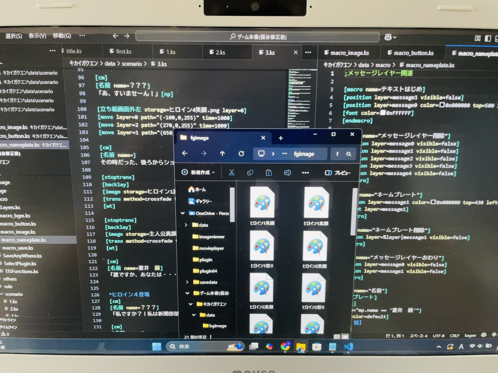
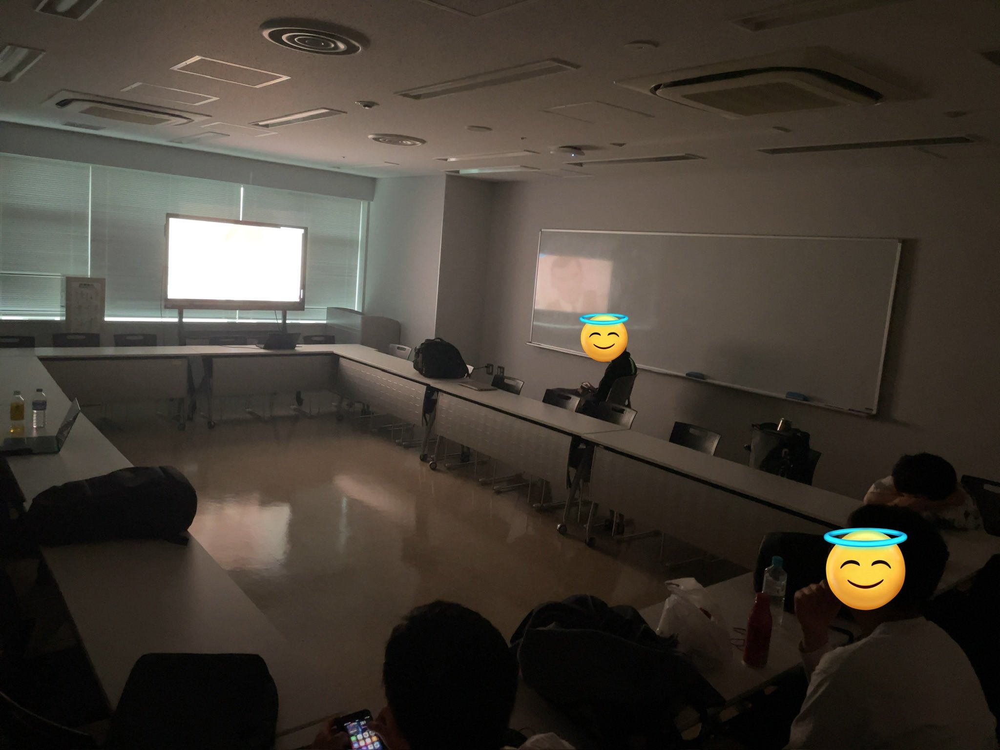
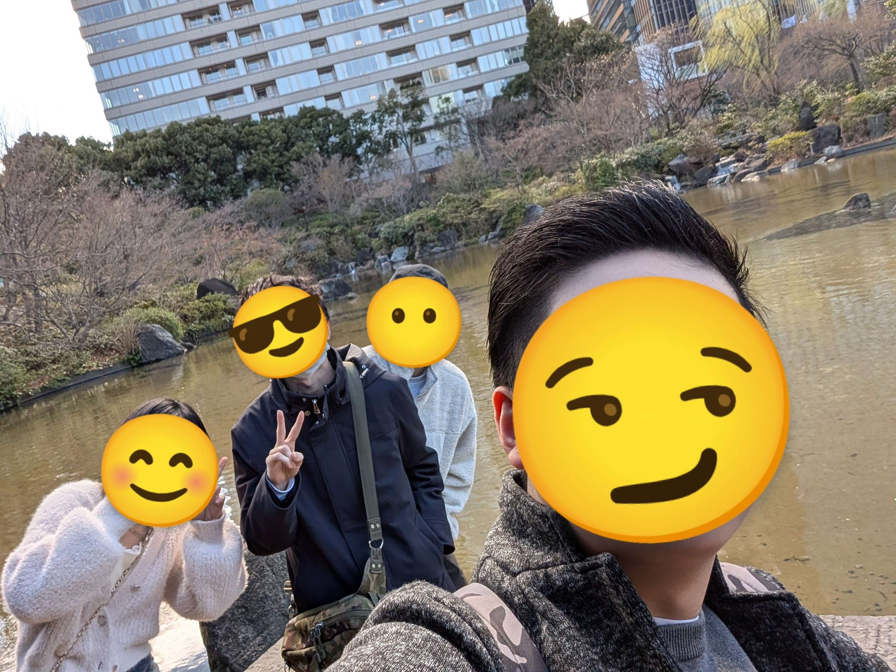
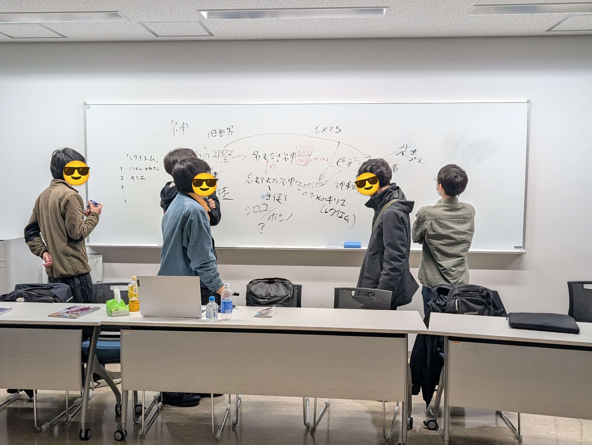

普段の活動
基幹活動：ゲーム制作
全員で協力し、ノベルゲームを制作します。イラスト、音楽、ストーリー、プログラミング、制作進行、5つが綺麗に揃わなければ完成しない総合芸術を力を合わせて作り上げます。

部誌制作
プログラミングが出来なかったり、絵が描けなくても関係無く、全メンバーが参加できる基幹活動で、アニメを中心にサブカルチャーの評論を掲載します。
日常活動：アニメ考察会
週に数回アニメーションを上映し、その考察を行います。上映や考察ばかりでなく、近況を語り合い、雑談で交流する、触発と励ましの集いとなっています。



自主活動：ギルド内サークル
サブカル研究会GUILDは、内部に「ギルド内サークル」といういくつものミニサークルが存在します。GUILDは、アニメやゲームだけでなく、散歩や麻雀、ボカロなど、あなたの「好き」がそのままサークルになる場所なのです。